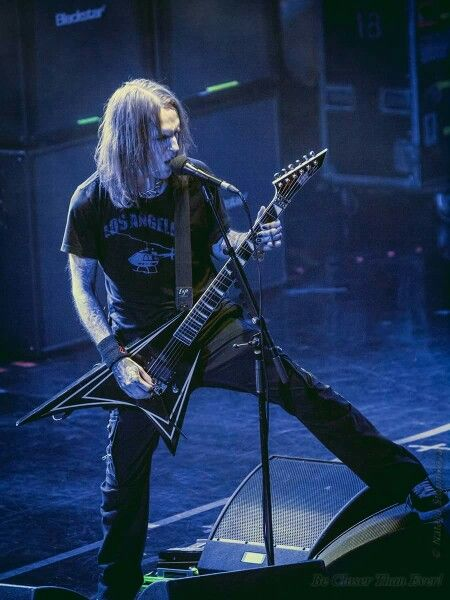

The Voice of Bodom | 1979–2020

Алекси "Wildchild" Лайхо (настоящее имя — Маркку Уула Алекси Лайхо) был не просто лидером, вокалистом и соло-гитаристом Children of Bodom, он был одной из самых влиятельных фигур в современном мелодичном дэт-метале.
Родился в Эспоо, Финляндия. Алекси начал заниматься музыкой с раннего возраста, осваивая скрипку, а затем переключился на гитару, вдохновленный такими виртуозами, как Стив Вай и Рэнди Роудс. Его стиль игры сочетал неоклассическую виртуозность с блэк-металлическим агрессивным тоном, что стало визитной карточкой COB.
В 1993 году он основал группу, которая сначала называлась Inearthed, а позже стала Children of Bodom. Под его руководством группа выпустила десять студийных альбомов, получив золотые и платиновые статусы и мировое признание. Он был известен своим фирменным инструментом — гитарой **ESP Alexi Laiho Signature Series**.
После распада Children of Bodom в 2019 году Алекси основал новую группу Bodom After Midnight. Его карьера трагически оборвалась в конце 2020 года. Наследие Алекси Лайхо как гитарного героя, композитора и уникального фронтмена остается неизмеримым.